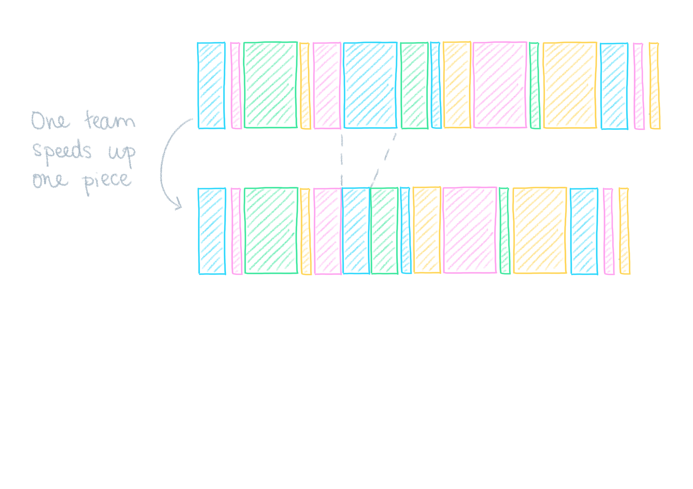
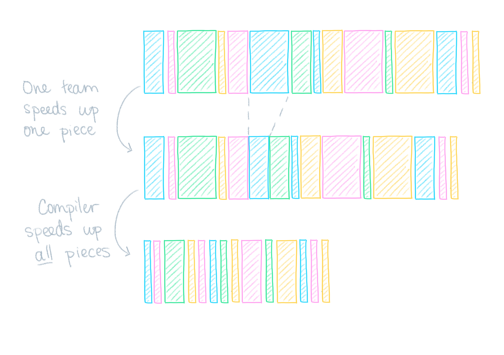
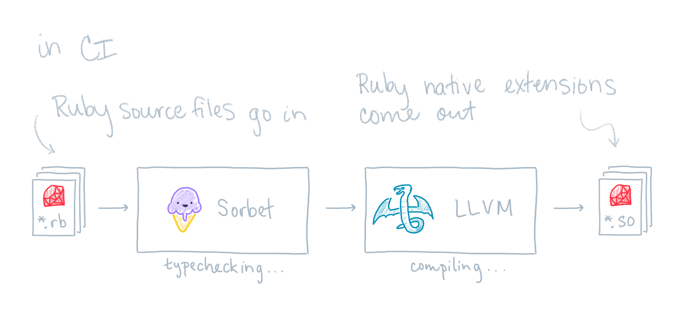
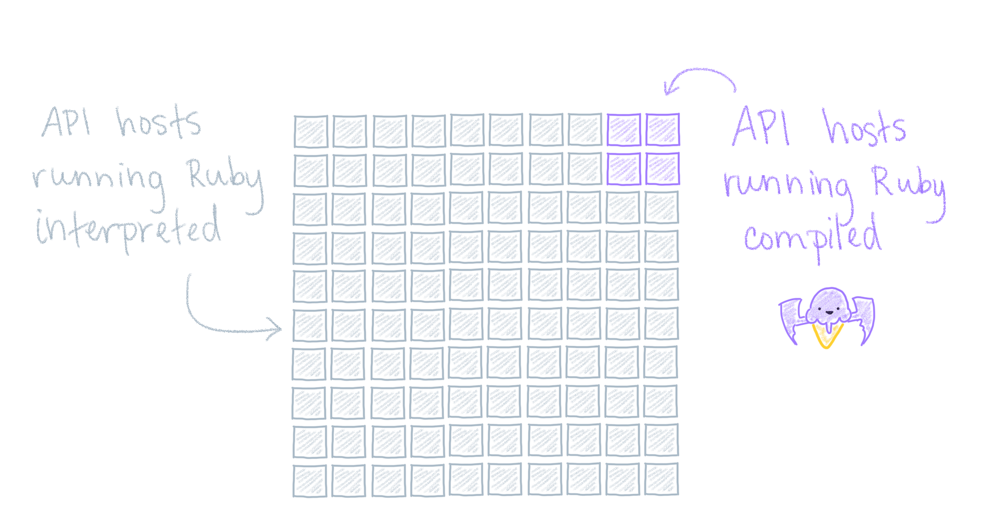

Compiling Ruby to Native Code with Sorbet and LLVM
Jake Zimmerman (@jez)
Trevor Elliott (@elliottt)
November 10, 2021
- Why does Stripe care about Ruby performance?
- Why write a compiler for Ruby?
- How does it work?
- How did we adopt it?
üîé About Stripe
More than 4,000 employees
Company that built Sorbet
22% of company works permanently remote
We’re hiring!
→ stripe.com/jobs
üìà Stripe is an API for building a business
- Accept payments
- Coordinate payouts
- Manage taxes
- Borrow & lend
- Expand globally
- …
üíé Stripe uses Ruby extensively
Powers our most important services (Stripe API)
Hundreds of engineers use Ruby daily
Millions of lines of code (monorepo)
Massive type coverage with Sorbet
API latency is a feature ✨
Stripe users want lower latency
Stripe API runs on every checkout
Visualizing API Latency



Why build a compiler‚Ķ? ü§î
- … at all?
- … instead of a JIT compiler?
- … instead of using TruffleRuby or JRuby?
- … for Ruby, instead of using another language?
Sorbet
- A typechecker for ruby with a powerful static analysis pass
- A gradual type system, allowing users to locally opt-out of type checking
Sorbet Example
Catching a type error
LLVM
- A toolkit that powers many compilers today
- clang, ghc, swift, …
Sorbet + LLVM = Sorbet Compiler
- Sorbet, augmented with an additional pass to generate LLVM IR
- LLVM is used to generate native code
Compiling the example
Leveraging types (the compiler’s view)
Leveraging types (the compiler’s view)
Leveraging types (skipping the vm to call map directly)
Leveraging types (inlining the definition of map)
Leveraging types (inlining the block)
Leveraging types (removing additional method calls)
Leveraging types (removing redundant type tests)
Final version

Requirements of source
- Must be
# typed: trueor higher - Must enable
# frozen_string_literal: true - Must be marked
# compiled: true
Code Generation
- LLVM IR is generated from a typechecked CFG
- The code generation pass and runtime support adds about 15k lines of code
Modifying the ruby VM
- We make changes frequently to the vm, and re-deploying to hosts wasn’t an acceptable solution
- What about bundling ruby into the deployment artifacts?
Deploying Compiled Code (Additional benefits)
- Canarying ruby upgrades is much simpler now
- We run tests with the same patched vm in CI that goes out to production
Adopting in production
- Compare performance on real traffic
- Must be incremental
- Plan for when things go wrong
Real traffic, small blast radius

Stackprof in production üë∑‚Äç‚ôÇÔ∏è

üèÜ Compile incrementally, most important first
Estimate latency of single method ⚖️

⏱ Track how much of request runs compiled

Plan for when things go wrong üò±
What’s next?
- Increase adoption (fraction running compiled)
- Profile and optimize (improve compiled performance)
- Keep time-to-compile low (developer productivity)